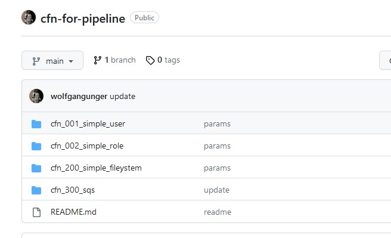
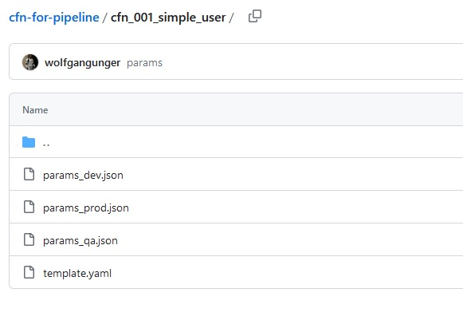

SCC
Brasil
os cloud gurus
Software Cloud Consulting
Your software development, cloud, consulting & shoring company
How to organize your CloudFormation Templates

By Wolfgang Unger
You are using CloudFormation as IaC Tool but you struggle to organize your templates?
How many Templates should you have, how should you group your resources into the templates?
What are Best Practices on this questions and for CloudFormation?
Lets have a look on this questions in this blog.
Introduction

With CloudFormation you can code your infrastructure as code in yaml or json format and check in your repo.
This way all your infrastructure is documented in git and you have also the history available in case you have to rollback to a earlier version.
That's great, but I have seen with many clients, they have problems to organize and structure their Templates and their resources.
So what are the best practices to organize your CloudFormation Templates and Resources?
A CloudFormation Template can have multiple Resources, so in theory you could add all of them in one CloudFormation Template.
But this would be not a good idea, not only that a template got an restriction on its size but also it would be really hard to maintain and update.
Each time you must update just one resource you have to update the Template that contains your entire Infrastrusture.
So obvious this is not the way to go.
We must somehow distribute our resources in multiple CloudFormation templates and deploy them one after the other .
If you have a background as Software Architect you can apply a principle here that is not only valid for Application Code and Classes
( in object orientated langueages ) but also for Infrastructure as Code.
A little about Software Architecture ...

In the early days of Software Engineering there were some common Anti Patterns: Spagetti Code or God-Classes.
Which are basically a lack of structure, or organizing your Code into Modules with clear dependencies and Concerns.
Once you divide your Code into classes, you will face a problem with Dependencies:
- Some classes will be used or called by other classes.
- Some classes will just use or call other Classes.
- And some classes will do both.
The first category are called stable classes. java.lang.Math is a good example for this or any class you code which will be used by many other classes but does not need other classes to work.
These classes are named stable because you should and almost cannot change them once in use. Other classes using them must be adapted in this case .
Applying this to CloudFormation and AWS resources, we are talking about resources which must be deployed very early and
provide outputs for other Stacks which will have a dependency on them. Common resources in other words.
For example the VPC. Most other resources like EC2 instances, RDS instances, Elastice Beanstalk instances and so on will need the VPC or Subnet ID.
Like a stable Java class, once a VPC is deployed it is almost impossible to delete, because the other stacks depend on it.
The second category are classes which only uses other classes but are not called itself. Frontend classes for example which are using Service Classes, Backend Classes, Util classes and so on.
Applying this to CloudFormation and AWS resources, these resources must be deployed at the very end, when the Templates which provides Outputs are already deployed .
The third category of cource must be deployed somehow in the middle .
Structuring CloudFormation
With this in mind, we can now better approach the desing of our layers and template seperation.
Organize your stacks/resources by Deployment Order and Dependencies
Lets classify some AWS resources from stable to less stable:- VPC and Network resources will have a bunch of resources that use them. So they are stable and provide Outputs to other Stacks,
that will read these as InputValues . On the other side, a VPC does not need other resources to work properly .
- Same for common IAM resources like Users, Roles, Policies.
(Excution Roles for a dedicated Instance or Lambda Function might need the ARN of its executing resource to limit the permissions, they have to be seen different)
- Parameters and Secrets don't need other services but will be read by Appplications or Databases.
- Storage like S3 Buckets will be probably used by other Services like Applications, Lambdas etc
- RDS Instances will have to provide Outputs ( like the Connection String) to Applications and Lambdas but will need the VPC
- Applications, ECS Services, Lambdas will need these already mentioned resources.
- A recordset in a HostedZone must know the target, so a already deployed S3 Bucket or a Loadbalancer or EC2 IP.
- Monitoring resources, for examples alarms and Dashboards can only work on the deployed resources, they should monitor.
Organize your stacks by lifecycle and ownership
This depends on your organizational Strucuture, how many teams work on the resources and applications and so onFor example you have 3 software teams, each one is responsible for one or a set of microservices ( which might be a Fargate Service)
In this case, you should separate the Fargate resources for each microservice in one CloudFormation Template, so each team
can deploy without bothering the other team.
Or you have 2 big applications deployed, each one got a RDS instance but are managed by 2 teams.
Again, separate the applications and databases in different Templates.
Layer Proposal
Since we got now a better understanding on the Deployment Order lets define some Groups or lets call it Layers for CloudFormation:We will deploy our stacks from top to bottom, so first the IAM Templates, then VPC and so on.
Inside one Layer we can still organize our Templates on lifecycle and Ownership, for example in Computing define a couple of Fargate Templates for each microservice Team.
Deployment Order
Once we are adding Outputs and read them later on in InputValues we have created dependencies.One Stack must be deployed before the other in the correct order.
This is not valid for each stack to each other stack, but clearly we must deploy our Stacks of Layer Computing after our Stacks of Layer Networking.
I have seen customers, that have written a bunch of CloufFormation templates, deployed them at some point of time in the correct order,
but then hey had to deploy a new account from zero and they had no idea in which order to deploy the stacks.
So wouldn't it be great to number our stacks, so we just can follow these numbers when we deploy a new stage or account?
Let's face, it won't be able to number your stacks with ascending numbers from 1 to 50.
Your requirements change and you will have to add a new stack between stack 22 and 23.
So we have to deal with this situation and be prepared.
A good way is to group your numbers in blocks of 100 to your layers, so you still got the chance to add stacks later on to each layer.
So would look like this :
Naming
Sometimes stacks get deployed with names like : EC2, S3, Application etc.If you have only one EC2 Instance in your system ok, but likely you will add another one, such please think of a better name.
Again we can learn from Software Architecture and Robert C Martins recommendations on method names.
Use meaningful names like ElasticBeanstalk-Microservice1 or FargateService-BackendApplication or RDS-Customer-Application etc
Keeping this is mind lets think of a couple of Stacks and its Names we could define like this:
cfn-001-technical-users
cfn-002-roles-admins
cfn-003-roles-readonly
cfn-100-vpc
cfn-110-transitgateway
cfn-140-hosted-zone
cfn-200-parameters-microservice1
cfn-201-parameters-microservice2
cfn-210-secrets-microservice1
cfn-211-secrets-microservice2
cfn-220-ksm
cfn-300-s3
cfn-320-rds-microservice1
cfn-321-rds-microservice2
cfn-400-ecs-cluster
cfn-401-ecr
cfn-410-fargate-microservice1
cfn-411-fargate-microservice2
cfn-450-lambda-thumbnailer
cfn-500-alarms
cfn-510-dashboard
With these names we can now organize our CloufFormation Repo and create one Subfolder for each CloudFormation Template.
Foldername is Stackname.
Inside each folder we got exactly one CloufFormation Template and its Parameter Files.

See tis example repo how your CloufFormation Repo can look like:
Git Wolfgang Unger CFN Example Repo
Staging and Parameters
Of course your Templates will have Parameters.Like for example 'InstanceType' which might be m5.large on Dev but m5.2xlarge on Prod.
You should store your Parameters in your CloudFormation repo next to its corresponding template file.
So they never got lost and you also got the history.
You could just store parameters for all stages in one text file, but I suggest your store them in one json file for each stage.
If you will implement a Automation or a Pipeline for Deployment later on, this will help, because a json file can be read much easier by a script.
I have a blog about to automate CloudFormation Deployment with a Pipeline, please have a look:
Git Pipeline for CloudFormation Deployment
A json File for your parameters would look like this :
{
"Parameters" : {
"OwnerName" : "wolfgang.unger",
"Stage": "dev"
}
}
One folder for one CloudFormation would contain these files:

You can see the template yaml and 3 json files for the parameters.
I have named the Yaml file just template.yaml not 'cfn-001-simple-user.yaml' because I am using this
in my Pipeline and this way it is easier to read generic from a script, I will find in any of my CloudFormation Folders a template.yaml.
They Stack Name I get from the FolderName.
But if you don't use a Pipeline, feel free to name the Yaml exactly like the Stackname.
A word on stages:
If you are deploying your Templates on 3 stages for example, there are 2 scenarios to do so:
You can deploy each environment and stage in a different account.
You can deploy the 3 stages also in one account.
The 2nd approach will force you to do some extra work on your Templates, respectivly on your Outputs and InputValues.
You can use a Stack Name and also an Output Name only once in one region and account, so if you are deploying your VPCStack for stage Dev in your account, you cannot deploy it again with the same name for QA and Prod.
You have to name the Stack for example VPCStack-Dev,VPCStack-QA and VPCStack-Prod.
Same is valid for Outputs.
If your VPCStack got an Output named VPC-ID, the stack cannot be deployed with the same Output again.
You have to concatenate a Pre or Postfix to the Output Name like VPC-ID-Dev.
This will complicate things a little. You have to pass a variable Stage to all Stacks with this issue.
This variable could look like :
EnvironmentName:
Description: An environment name that will be prefixed to resource names
Type: String
Default: dev
AllowedValues:
- dev
- qa
- prod
And you must always concatenate your Outputs and Input Values with this Stage Prefix like for example :
!Sub "${EnvironmentName}-VPC-ID"
Conclusion
By now you should know how to structure and name your CloudFormation Templates.Have fun to cleanup and organize your Repo.
See also these blogs about CloudFormation:
IaC - infrastructure as Code
Pipeline for automatic CloudFormation Deployments
Autor

Wolfgang Unger
AWS Architect & Developer
6 x AWS Certified
1 x Azure Certified
A Cloud Guru Instructor
Certified Oracle JEE Architect
Certified Scrum Master
Certified Java Programmer
Passionate surfer & guitar player